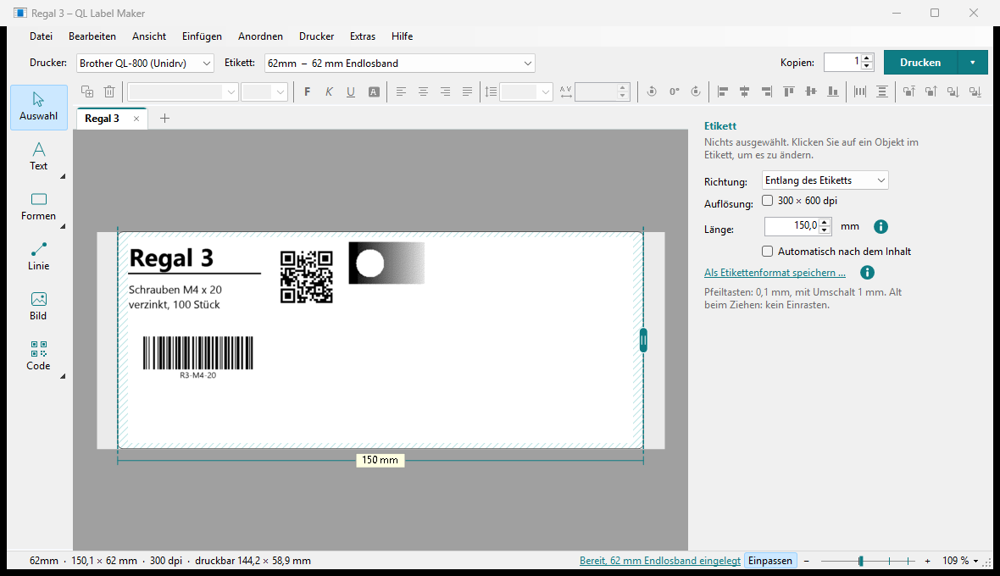

Etiketten gestalten und drucken
Mit dem QL Label Maker gestalten Sie Etiketten für Brother-QL-Drucker: Text, Linien, Formen, Bilder, Barcodes und QR-Codes. Was Sie auf dem Bildschirm sehen, wird genau so gedruckt, Punkt für Punkt.

1 2 3 4 5 6- 1WerkzeugeText, Formen, Linie, Bild und Codes einfügen; ein Dreieck in der Ecke: mehrere Werkzeuge
- 2Drucker, Etikett, Druckenworauf gedruckt wird, und wie oft
- 3Leiste Anordnenduplizieren, drehen, ausrichten, verteilen, Ebenen
- 4Zeichenflächedas Etikett in echten Proportionen; schraffiert: dort druckt der Drucker nicht
- 5Einstellungenalles zum ausgewählten Objekt; ohne Auswahl: Richtung, Auflösung und Länge
- 6StatusleisteEtikettengröße, eingelegte Rolle, Zoom